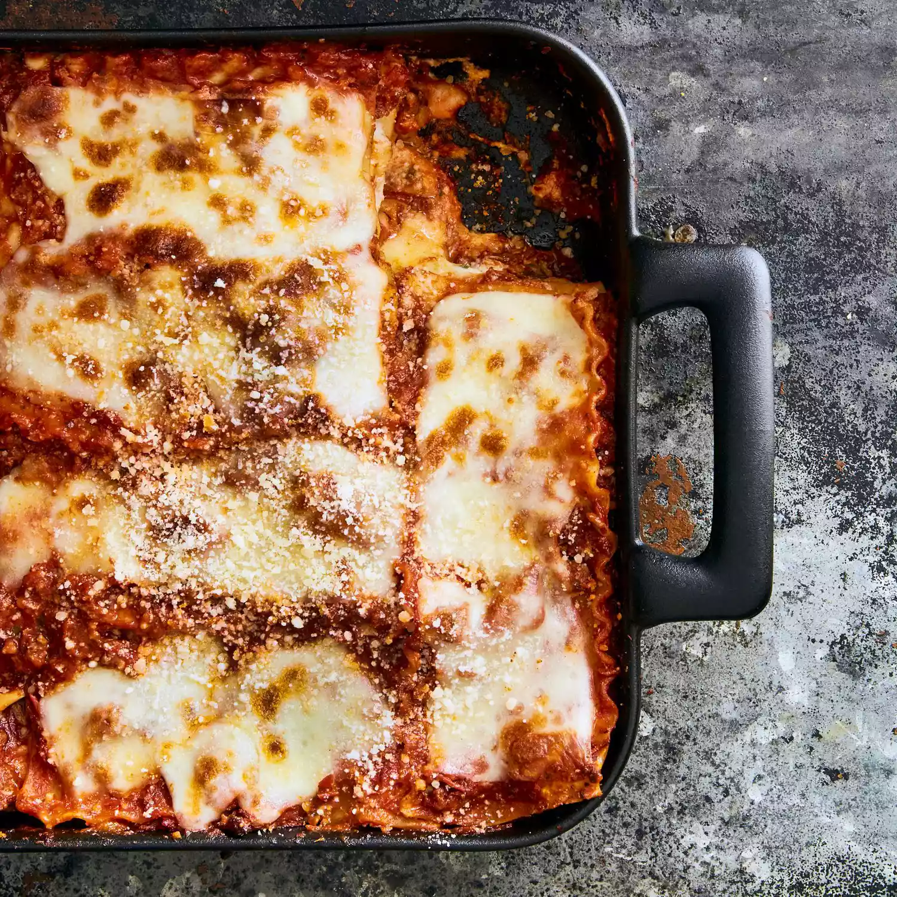

Lasagna

Description
Some meals are just perfect and when we talk about perfection we cant forget to include a lasagna in it!
Ingredients
- Meat: This super meaty lasagna has sweet Italian sausage and lean ground beef.
- Onion and garlic: An onion and two cloves of garlic are cooked with the meat to add tons of flavor.
- Tomato products: You'll need a can of crushed tomatoes, two cans of tomato sauce, and two cans of tomato paste.
- Sugar: Two tablespoons of white sugar add subtle sweetness and enhance the flavor of the sauce.
- Spices and seasonings: This lasagna recipe is flavored with fresh parsley, dried basil leaves, salt, Italian seasoning, fennel seeds, and black pepper.
- Lasagna noodles: Use store-bought or homemade lasagna noodles.
- Cheeses: Parmesan, mozzarella, and ricotta cheese make this lasagna extra decadent.
- Egg: An egg helps bind the ricotta so it doesn't ooze out of the lasagna when you cut into it.
How to make Lasagna Step-by-Step
- Make the meat sauce.
- Cook the noodles.
- Make the ricotta mixture.
- Layer the lasagna according to the recipe instructions displayed in the list that follows under.
- Cover with foil and bake.
- Let the asalgna rest before serving.
How to Layer Lasagna
The order of layers is as follows:
- Meat sauce
- Noodles
- Ricotta mixture
- Mozzarella slices
- Meat sauce
- Parmesan cheese
- Repeat the layers, then top with the remaining Parmesan.
How long to cook the lasagna
The assembled lasagna should take about 50 minutes to cook in an oven preheated to 375 degrees F. Cover it with foil for the first 25 minutes, then let it cook uncovered for the final 25 minutes. Also, it's important to let the lasagna rest at room temperature for about 15 minutes before you cut into it.

It's Done
Hope you are ready to cook your own lasagna, it'll be tasty!
Go back to check other recipes